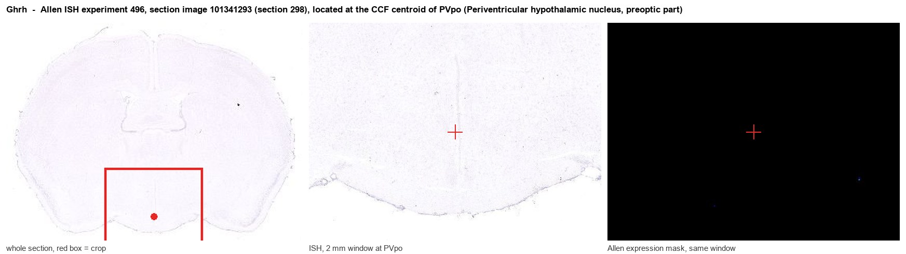
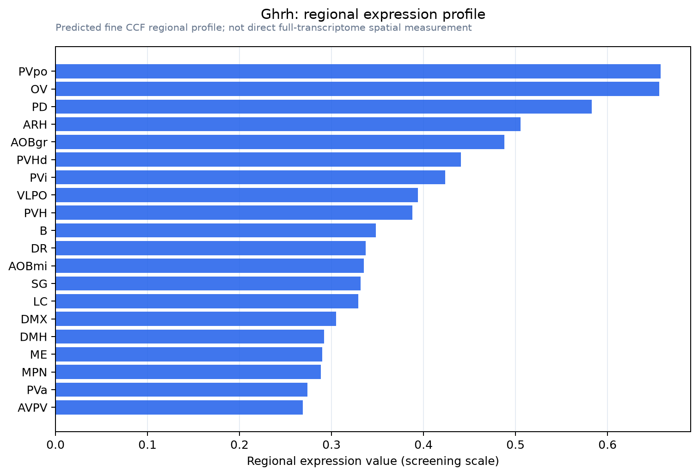

Ghrh
Spatial tier: REGION_BIASED · Class: OTHER · Top region: PVpo (Periventricular hypothalamic nucleus, preoptic part) · Positive regions: 31/554
44.9Discovery Score
37.9Targetability Score
CEvidence grade C
What this means: Ghrh: fine CCF profile is region-biased toward PVpo (top regions: PVpo, OV, PD, ARH, AOBgr); this is a discovery lead, not direct proof.
Function in PVpo: evidence, prediction, innovation
- Gene function
- Ghrh encodes growth-hormone-releasing hormone, a 44-amino-acid hypothalamic releasing peptide of the secretin/glucagon family. Released into the hypophysial portal circulation, it acts on the Gs-coupled GHRH receptor in pituitary somatotropes to raise cAMP and drive growth hormone synthesis and pulsatile secretion; centrally it also acts on preoptic/anterior hypothalamic neurons.
- Region function
- The preoptic part of the periventricular hypothalamic nucleus is a thin periventricular cell group containing neuroendocrine and sleep-related neurons; it contributes to hypophysiotropic control (somatostatin, GHRH, dopamine) and to preoptic regulation of sleep and body temperature.
- Published in this region
- direct GHRH has documented central actions in exactly this territory: Obal 2004 reviewed evidence that GHRH acts in the preoptic area/anterior hypothalamus to promote non-REM sleep, that GHRH antagonists and anti-GHRH antibodies suppress NREM sleep, and that GHRH-deficient animals show reduced NREM. Ding 2025 defined the neuroendocrine circuit by which sleep state gates GHRH-driven growth hormone release.
- Predicted function
- Prediction: GHRH-expressing periventricular preoptic neurons act as a bridge between sleep pressure and the somatotropic axis, exciting sleep-active preoptic GABAergic neurons locally while sending hypophysiotropic drive to the median eminence, so that NREM episodes and GH pulses are locked together. Chemogenetic activation of these cells should increase NREM amount and slow-wave activity and advance a GH pulse; their ablation or a GHRH-receptor antagonist should fragment NREM sleep and flatten the pulsatile GH profile without abolishing circadian wake timing.
- Innovation
- ★★☆☆☆ 2/5 GHRH and sleep is a decades-old literature, so the novelty lies in cell-type-specific circuit dissection of the preoptic periventricular population rather than in the gene-region pairing itself.
- Tools
- Ghrh-Cre driver line (JAX) and Ghrh-eGFP mice; GHRH receptor agonist sermorelin/tesamorelin and antagonists MZ-4-71 and JV-1-36; lit/lit and Ghrh knockout mice; anti-GHRH antibodies.
- References
Direct evidence located at the region

Allen ISH experiment 496, section image 101341293 (section 298): the section that contains the CCF centroid of Periventricular hypothalamic nucleus, preoptic part according to the Allen image-to-atlas alignment (reference_to_image), with a 2 mm window around that point. Left: whole section, red box = window. Middle: ISH signal. Right: Allen's expression-mask view of the same window. open this image in the Allen viewer
Look it up yourself: Allen Mouse Brain ISH for GhrhAllen reference atlas: PVpo (structure 133)ABC Atlas MERFISH viewer(in the ABC Atlas choose dataset MERFISH-C57BL6J-638850-CCF, colour cells by gene "Ghrh" or by parcellation_substructure "PVpo")All genes confined to PVpo + 3-D brain
Direct spatial evidence
MERFISH REGION LOCATOR

Regional expression figure

Predicted WMB × fine-CCF profile; not direct full-transcriptome spatial measurement.
Spatial profile
Evidence and specificity
- Evidence status
- PREDICTED_FINE
- Direct sources
- None; predicted localization only
- Exclusive threshold
- 12 positive regions out of 554
- Spatial specificity
- 0.321
- Top-region fraction
- 0.046
- Filter status
- PASS
Interpretation limits
- Cell-type-to-region projection is imputed expression, not direct spatial measurement.
- Adult reference atlases do not establish stability across age, sex, strain, state, or disease.
- Transcript abundance does not guarantee protein abundance or genetic-tool performance.